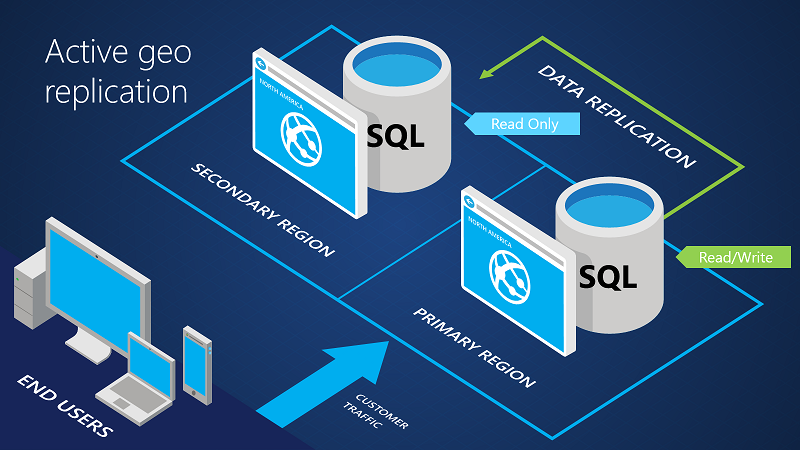
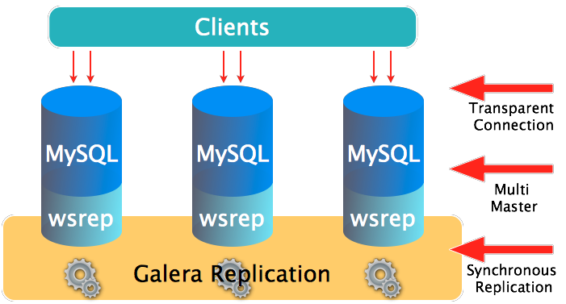

Install Mysql cluster

การทำงาน

เรียนรู้การติดตั้ง mysql-cluster โดยการติดตั้ง vagrantfile ด้านล่างนี้
$ mkdir cluster
$ vagrant plugin install vagrant-vbguest
$ vim Vagrantfile
สร้าง Vagrantfile สำหรับ cluster
# -*- mode: ruby -*-
# vi: set ft=ruby :
# All Vagrant configuration is done below. The "2" in Vagrant.configure
# configures the configuration version (we support older styles for
# backwards compatibility). Please don't change it unless you know what
# you're doing.
Vagrant.configure(2) do |config|
config.vm.synced_folder ".", "/vagrant", type:"virtualbox"
if Vagrant.has_plugin?("vagrant-timezone")
config.timezone.value = "Asia/Bangkok"
end
config.vm.define "node1" do |node|
node.vm.box = "centos/7"
node.vm.hostname = "mysql-node1"
node.vm.network :private_network, ip: "10.1.0.11"
end
config.vm.define "node2" do |node|
node.vm.box = "centos/7"
node.vm.hostname = "mysql-node2"
node.vm.network :private_network, ip: "10.1.0.12"
end
config.vm.define "node3" do |node|
node.vm.box = "centos/7"
node.vm.hostname = "mysql-node3"
node.vm.network :private_network, ip: "10.1.0.13"
end
config.vm.define "web" do |node|
node.vm.box = "centos/7"
node.vm.hostname = "mysql-web"
node.vm.network :private_network, ip: "10.1.0.10"
end
config.vm.provider "virtualbox" do |v|
v.memory = 2048
v.cpus = 2
end
end
$ vagrant up
$ vagrant status
Current machine states:
node1 running (virtualbox)
node2 running (virtualbox)
node3 running (virtualbox)
web running (virtualbox)
$ vagrant ssh node1 -c "hostname -s"
$ vagrant ssh node2 -c "hostname -s"
$ vagrant ssh node3 -c "hostname -s"
ขั้นตอนดังต่อไปนี้
(แนะนำ ให้เปิดด้วย 3 terminal)
- ให้ทำการแก้ไข local ให้กับทุกครบทุกเครื่อง node1, node2, node3, web
(login vagrant และเปลี่ยนเป็น root user)
vagrant ssh node1
sudo su -
ให้ทำการข้างต้นใน node2,node3
vi /etc/environment
LANG=en_US.utf-8
LC_ALL=en_US.utf-8
1. เพิ่ม repository ให้กับทุกครบทุกเครื่อง node1, node2, node3, web
vi /etc/yum.repos.d/galera.repo
[galera]
name = Galera
baseurl = http://releases.galeracluster.com/galera-3/centos/7/x86_64/
gpgkey = http://releases.galeracluster.com/GPG-KEY-galeracluster.com
gpgcheck = 1
[mysql-wsrep]
name = MySQL-wsrep
baseurl = http://releases.galeracluster.com/mysql-wsrep-5.7/centos/7/x86_64/
gpgkey = http://releases.galeracluster.com/GPG-KEY-galeracluster.com
gpgcheck = 1
yum update -y
yum repolist
2. ติดตั้ง package
yum -y install galera-3 mysql-wsrep-5.7 rsync lsof policycoreutils-python firewalld
systemctl enable mysqld
3. เริ่มต้น service
systemctl enable firewalld
systemctl start firewalld
4. กำหนด firewall
firewall-cmd --zone=public --add-service=mysql --permanent
firewall-cmd --zone=public --add-port=3306/tcp --permanent
firewall-cmd --zone=public --add-port=4444/tcp --permanent
firewall-cmd --zone=public --add-port=4567/tcp --permanent
firewall-cmd --zone=public --add-port=4567/udp --permanent
firewall-cmd --zone=public --add-port=4568/tcp --permanent
firewall-cmd --reload
5. ตั้งค่า SE Linux
vi /etc/sysconfig/selinux
SELINUX=enforcing
semanage port -a -t mysqld_port_t -p tcp 4567
semanage port -a -t mysqld_port_t -p udp 4567
semanage port -a -t mysqld_port_t -p tcp 4568
semanage port -a -t mysqld_port_t -p tcp 4444
semanage permissive -a mysqld_t
6. backup file /etc/my.cnf และเพิ่ม ค่า config ให้เป็น cluster
cp /etc/my.cnf /etc/my.cnf.bak
vi /etc/my.cnf
[mysqld]
datadir=/var/lib/mysql
socket=/var/lib/mysql/mysql.sock
user=mysql
binlog_format=ROW
bind-address=0.0.0.0
default_storage_engine=innodb
innodb_autoinc_lock_mode=2
innodb_flush_log_at_trx_commit=0
innodb_buffer_pool_size=122M
wsrep_provider=/usr/lib64/galera-3/libgalera_smm.so
wsrep_provider_options="gcache.size=300M; gcache.page_size=300M"
wsrep_cluster_name="galera_cluster1"
wsrep_cluster_address="gcomm://10.1.0.11,10.1.0.12,10.1.0.13"
wsrep_sst_method=rsync
server_id=1
wsrep_node_address="10.1.0.11"
wsrep_node_name="mysql-node1"
[mysql_safe]
log-error=/var/log/mysqld.log
pid-file=/var/run/mysqld/mysqld.pid
จากขั้นตอนด้านบน จะเป็นของเครื่อง mysql-node1 (10.1.0.11) ให้ทำการข้างต้นใน node2,node3
สำหรับเครื่อง mysql-node2
server_id=2
wsrep_node_address="10.1.0.12"
wsrep_node_name="mysql-node2"
สำหรับเครื่อง mysql-node3
server_id=3
wsrep_node_address="10.1.0.13"
wsrep_node_name="mysql-node3"
7. สร้าง log
touch /var/log/mysqld.log
chown mysql:mysql /var/log/mysqld.log
8. start MySQl cluster
เริ่มต้น ที่ โหนด mysql-node1
ให้สั่งคำสั่งนี้ที่โหนดที่ 1
/usr/bin/mysqld_bootstrap
ผลที่ได้ จำได้ password ชั่วคราว (Temporary password) โดยหาได้จาก
journalctl -u mysqld | grep "password"
A temporary password is generated for root@localhost: xqboGysQ?5k-
นำ password xqboGysQ?5k- (แต่ละคนจะต่างกัน) ที่ได้มาสร้าง root password เปลี่ยนเป็น "P@ssw0rd"
/usr/bin/mysql_secure_installation
Securing the MySQL server deployment.
Enter password for user root:
The existing password for the user account root has expired. Please set a new password.
New password:
Re-enter new password:
Sorry, passwords do not match.
New password:
Re-enter new password:
The 'validate_password' plugin is installed on the server.
The subsequent steps will run with the existing configuration
of the plugin.
Using existing password for root.
Estimated strength of the password: 100
Change the password for root ? ((Press y|Y for Yes, any other key for No) : no
By default, a MySQL installation has an anonymous user,
allowing anyone to log into MySQL without having to have
a user account created for them. This is intended only for
testing, and to make the installation go a bit smoother.
You should remove them before moving into a production
environment.
Remove anonymous users? (Press y|Y for Yes, any other key for No) : yes
Normally, root should only be allowed to connect from
'localhost'. This ensures that someone cannot guess at
the root password from the network.
Disallow root login remotely? (Press y|Y for Yes, any other key for No) : no
By default, MySQL comes with a database named 'test' that
anyone can access. This is also intended only for testing,
and should be removed before moving into a production
environment.
Remove test database and access to it? (Press y|Y for Yes, any other key for No) : yes
Reloading the privilege tables will ensure that all changes
made so far will take effect immediately.
Reload privilege tables now? (Press y|Y for Yes, any other key for No) : yes
ตรวจสอบ port
(port 4567 is actively listening for any replication)
lsof -i:4567
COMMAND PID USER FD TYPE DEVICE SIZE/OFF NODE NAME
mysqld 14694 mysql 12u IPv4 39637 0t0 TCP *:tram (LISTEN)
(port 3306 is actively listening for any MySQL connections.)
lsof -i:3306
COMMAND PID USER FD TYPE DEVICE SIZE/OFF NODE NAME
mysqld 14694 mysql 35u IPv4 39654 0t0 TCP *:mysql (LISTEN)
mysql -u root -p
mysql> SHOW STATUS LIKE 'wsrep_cluster_size';
+--------------------+-------+
| Variable_name | Value |
+--------------------+-------+
| wsrep_cluster_size | 1 |
+--------------------+-------+
1 row in set (0.00 sec)
mysql> SHOW GLOBAL STATUS LIKE 'wsrep_%';
mysql> SHOW STATUS LIKE 'wsrep_cluster_%';
จากนั้นให้ทำไปยัง mysql-node2, mysql-node3 เพื่อทำการการ start database
root@localhost # systemctl start mysqld
และดูผลได้ที่ mysql-node1 ค่าของ wsrep_cluster_size จะเพิ่มขึ้น เท่ากับจำนวน ของ cluster ที่เพิ่มมา
mysql -u root -p
mysql> SHOW STATUS LIKE 'wsrep_cluster_size';
+--------------------+-------+
| Variable_name | Value |
+--------------------+-------+
| wsrep_cluster_size | 3 |
+--------------------+-------+
1 row in set (0.00 sec)